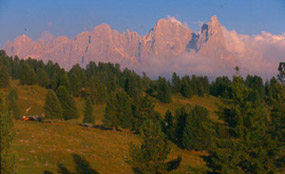
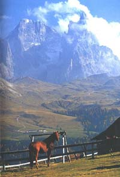
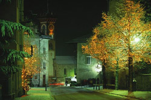
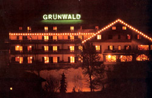
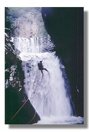
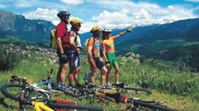

Welcome to ASIC 2004
The Third Annual Summer Interdisciplinary Conference (ASIC 2004) was held at Hotel Grunwald, in Cavalese, Val di Fiemme, Italy, in the Dolomites. Richard M. Shiffrin of Indiana University-Bloomington and Marco Zorzi of the University of Padova were co-organizers.

The Dolomites above the Val di Fiemme.
The conference used the very successful format of previous ASIC and AIC conferences: days are free for leisure activities and the talks are in the later afternoon/early evening, followed by dinner. The date was chosen to make it convenient for attendees from the United States to bring family and friends. The conference was open to all interested parties, and an invitation was not needed to attend. However, the limited time for talks meant the organizers selected the speakers from those arranging sessions or desiring to give individual talks. The subject is interdisciplinary, within the broad frame of Cognitive Science.

Scenery near Cavalese, in the Dolomites.
Invitation
The conference was open to all scholars who fit the very general theme of the conference, and their family and friends. An individual invitation was not needed.
Conference aims
The conference covered a wide range of subjects in cognitive science, including:
- neuroscience, cognitive neuroscience
- psychology (including perception, psychophysics, attention, information processing, memory and cognition)
- computer science
- machine intelligence and learning
- linguistics
- philosophy
The conference especially invited talks emphasizing theory, mathematical modeling, and computational modeling (including neural networks and artificial intelligence). Talks were required to be comprehensible and interesting to a wide scientific audience, with speakers providing overviews of current research areas as well as their own recent progress.
Conference format
The conference started with a reception on the first evening, Sunday, June 27, at 4 PM, followed by a partial session.
Each of the next five evenings, poster sessions ran from 4:00 to 4:30 PM, with drinks, light refreshments and snacks available during poster sessions and at the midway break. Talks began at 4:30 PM, with about 8 talks each evening plus a mid-session break, expected to finish about 8:45 PM. A banquet was held following the final session, on Friday, July 2. There were no parallel sessions.
Correspondence
Annual Summer Interdisciplinary Conference (ASIC 2004)
c/o Prof. Richard Shiffrin
Psychology Department
Indiana University
1101 E. 10th St.
Bloomington, IN 47405
Co-organizers: Richard Shiffrin (Indiana University) and Marco Zorzi (University of Padova).
Registration
Attendees registered online or by mail; payment was always sent by regular mail.
To attend the conference, attendees either registered online or filled out a printable registration form and sent it, with a check for the registration fee, by regular mail to:
ASIC 2004, c/o Prof. Richard Shiffrin
Psychology Department
Indiana University
Bloomington, IN 47405
Fee schedule (US dollars)
| Early registration (before Jan 1, 2004) | $120 USD |
|---|---|
| Regular registration (after Jan 1, 2004, before the conference) | $150 USD |
| On-site registration | $175 USD |
All fees were payable by check (no credit cards), made out to Annual Summer Interdisciplinary Conference (or ASIC 2004) and sent to the organizer at the address above. Checks from attendees outside the US were drawn on a US bank, or sent as an international cashier's check or the equivalent.
Travel & Lodging
A major superhighway, the A4, runs across northern Italy, just south of the Dolomites, from Milan to Venice. About two-thirds of the way to Venice, the A22 heads north from Verona to the Brenner Pass and on to Innsbruck, Austria.

Cavalese, in the Val di Fiemme.
Flights to Milan, Verona, Venice, or Innsbruck were recommended as providing the easiest access to the conference. Attendees were advised to rent cars at the airport of entry, both to enable transport to Cavalese and to allow easy access to leisure activities and tourism.
Directions to Hotel Grunwald
By car: Driving east from Ora on A22, one enters Cavalese on via Trento, passing piazza Partigiana, following via IX Novembre through piazza Dante, piazza Rizzoli and piazza C. Battisti, past the tower, to piazza Scopoli. From there, a right on vialle Mendini and a right onto via della Pieve leads to via Bresadola, where Hotel Grunwald is located.
By bus: From Piazza Autostazione, via Banco della Reson leads into via Bresadola, with the hotel a further half block on the right.
Lodging

Hotel Grunwald, the ASIC 2004 conference hotel.
Hotel Grunwald
Cavalese (Trento) — via Bresadola, 3
Val di Fiemme — Dolomiti — Italia
Tel: 0462/340369, 340651, 231503 · Fax: 0462/231504
Email: info@hotelgrunwald.it
The conference hotel had a restaurant, sauna, Turkish bath, and heated swimming pool. Lodging reservations included dinner and breakfast (lunch available for a small supplement). ASIC reserved the entire hotel: 56 nicely appointed rooms, from one to four beds per room.
Rooms were available at 50 Euro per person for half board (double occupancy), including breakfast and dinner except drinks such as wine. Full board (lunch) added a supplement of 5 Euro per person/day; single-room occupancy added a supplement of 10 Euro/day. Children staying in the same room as parents were free for both lodging and meals.
Activities
The conference was held in the Dolomites, a remarkable set of rocky crags in Northern Italy, with valleys typically starting about 3,000 feet and peaks rising to 10,000 feet.

Rock climbing in the Dolomites near Cavalese.
The area has enormous sheer cliffs rising from green valleys and beautiful lakes, large numbers of sharp pinnacles and spires, hiking paths, and extremely well-appointed mountain huts throughout the region. In addition to hiking, there are Via Ferrata ("iron walks") scattered throughout the mountains — paths threaded through cliffs and peaks with cables and iron ladders, allowing one to be attached to the cables at all times for a mountaineering-like experience while maintaining complete safety. Via Ferrata are rated for difficulty and are suitable for beginners and children.
Numerous opportunities exist for rock climbing throughout the area, mostly sport climbs with bolts every few feet, from one to twenty or more pitches, on Dolomitic limestone with many interesting features for face climbing.

Cavalese has a dedicated paved bicycle path winding through the countryside and mountains.
Other adventure activities in the area include canyoneering, parasailing, and mountain biking. Excellent touring by car is possible, and ski lifts operate in summer to bring visitors close to or on top of the peaks. For days before or after the conference, hut-to-hut hiking in the Dolomites was highly recommended — most huts are relatively inexpensive, situated in dramatic scenery, and offer fresh meals prepared with ingredients brought daily by cable from the valleys.
Example activities and costs (per person, Euro; minimum group size varies)
| Guided hike (moderate to difficult) | €25 (min. 5) |
|---|---|
| Guided visit to natural park — easy hike | €15 (min. 10) |
| Via Ferrata | €85 (min. 3) |
| Rock climbing course, 1–3 days, 9am–1pm | €65 (min. 3) |
| Climb of the Marmolada glacier (full day) | €90 (min. 2) |
| Canyoning (9am–1pm) | €52 (min. 5) |
For tourism during the conference, Trento and Bolzano are the closest cities, with Verona, Vicenza, Padova, and possibly Venice close enough for day trips that allow return to Cavalese in time for the evening sessions. Riva del Garda, on the northern tip of Lake Garda, is also a pleasant and accessible resort town.
Schedule
Thirteen speaking sessions and five poster sessions ran across the six days of ASIC 2004 (schedule as of May 18, 2004).
| Day | Time | Session |
|---|---|---|
| Sun, June 27 | 17:30–19:00 | I: Number Processing |
| 19:15–20:45 | II: Time and Recency Perception | |
| Mon, June 28 | 16:30–18:00 | III: Multiple Categorization and Memory Systems |
| 18:20–20:30 | IV: Categorization and Memory | |
| Tue, June 29 | 16:30–18:00 | V: Semantic and Conceptual Representation I |
| 18:15–19:15 | VI: Semantic and Conceptual Representation II | |
| 19:15–20:15 | VII: Induction of Meaning and Language | |
| Wed, June 30 | 16:30–20:45 | VIII: Reasoning, Inference, Judgment I / IX: Neural Bases of Cognition |
| Thu, July 1 | 16:30–20:15 | X: Perception and Information Processing / XI: Complex Systems; business meeting 20:15–20:40 |
| Fri, July 2 | 16:30–20:45 | XII: Multiple Systems of Memory / XIII: Memory; closing banquet 20:45 |
Drinks, snacks and a poster session preceded most days' talks, generally from 16:00–16:30. Monday, June 28 daytime was a group excursion sponsored and funded by TICS.
Contact
Email was the preferred way to reach the organizers.
Conference co-organizers
Rich Shiffrin
Indiana University – Bloomington
shiffrin@indiana.edu
Marco Zorzi
University of Padova
Postal address
Annual Summer Interdisciplinary Conference (ASIC 2004)
c/o Prof. Richard Shiffrin
Psychology Department
Indiana University
1101 E. 10th St.
Bloomington, IN 47405
Webmaster / conference coordinator
Krystal Klein, Indiana University – Bloomington